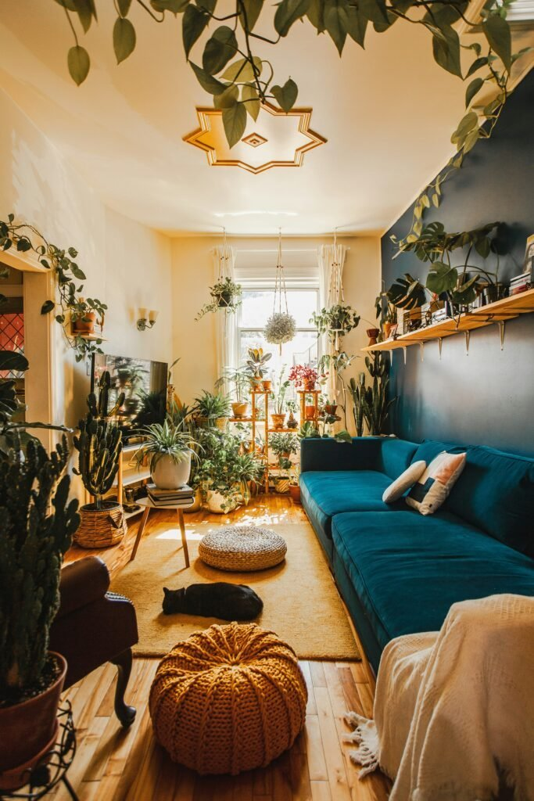
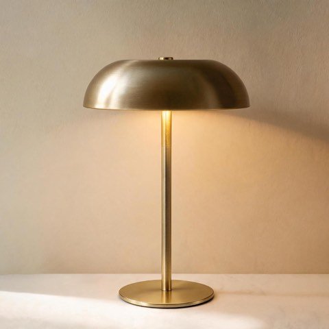
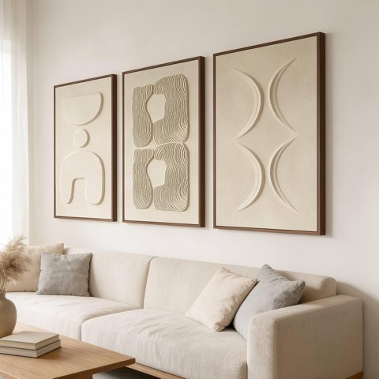
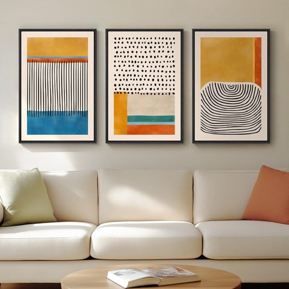
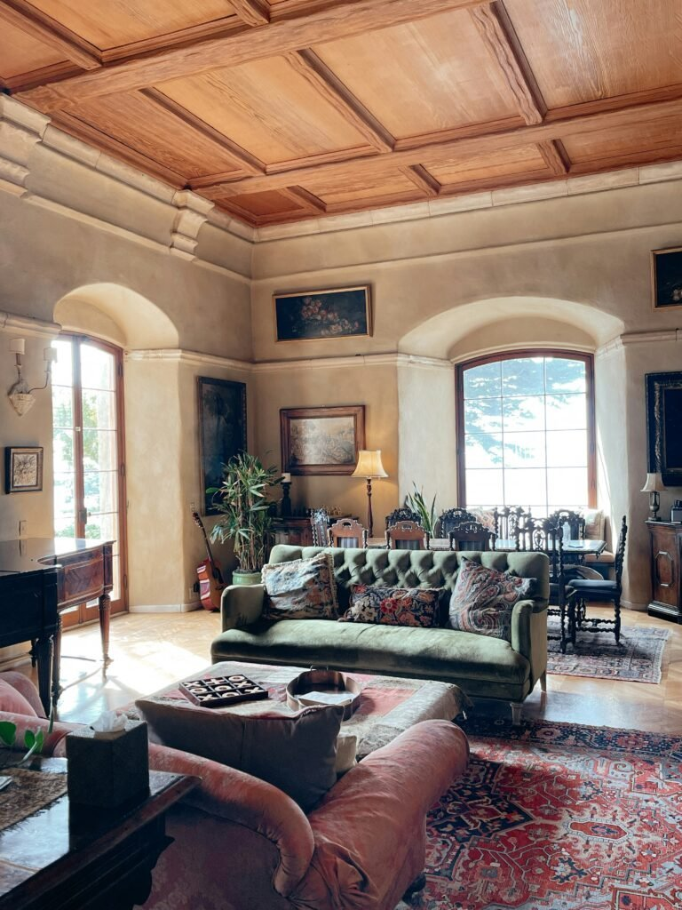
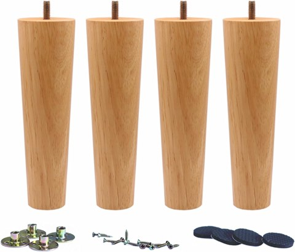
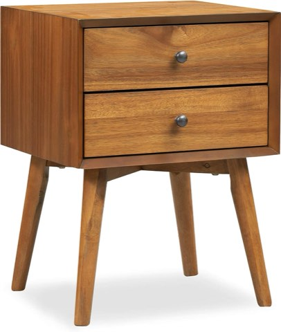
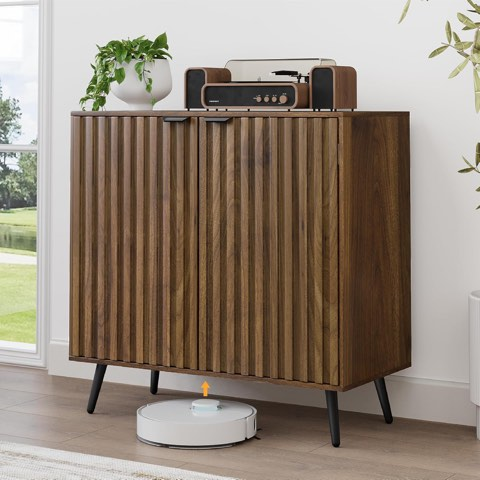
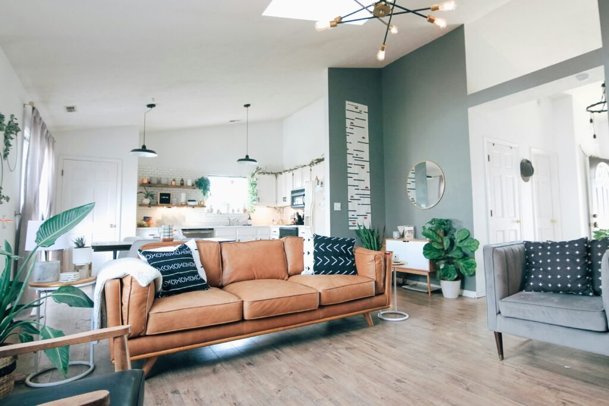
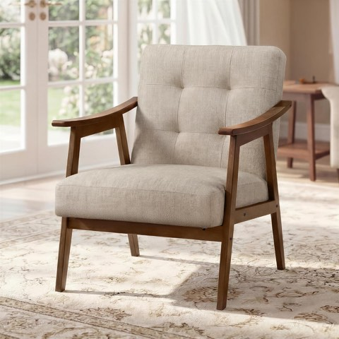

Mid-century is one of the most imitated styles in home design, which also makes it one of the easiest to get wrong without realizing it.
A lot of what's sold as "mid-century" today misses the actual design logic behind the style entirely.
This is about telling the real thing from the imitation, and why that distinction actually matters.

Finishing Touches That Respect the Style
A touch of warm brass or gold, texture introduced on the walls, and symmetry applied with a deliberate twist all finish a room without tipping it into over-styled territory.
These small choices are where genuine attention to the style's real character shows up most clearly.


Portable LED Mushroom Table Lamp, Cordless Gold, 3 Color Dimming, Touch Control
Shop on Amazon
Thalasse Large 3-Piece 3D Textured Wall Art for Living Room, 24 x 36 Inch
Shop on AmazonMistakes That Break the Authenticity
Overdoing the "retro" vibe with too many literal era references is the most common way a room tips from authentic into costume-like.
Too many competing wood tones, furniture scaled wrong for the room, and ignoring comfort for the sake of silhouette all undercut the style's real, lived-in character.
Personalizing Without Losing the Core
A modern twist, personal art or meaningful objects, and a deliberate mix of vintage finds with new favorites keep the room feeling like it belongs to someone specific.
This personalization is what separates a genuinely lived-in mid-century room from one that reads as a showroom recreation of the era.


Framed Colorful Mid Century Abstract Wall Art for Living Room, 16 x 24 Inch
Shop on AmazonInsider Secrets About Getting It Right
Balance matters more than matching, a room where everything matches too precisely often reads as less authentic than one with genuine variation.
Vintage doesn't mean old-fashioned, and conflating the two is a common reason people avoid a style that would actually suit their home.
Authenticity over perfection is the single most repeated principle among people who've actually lived with this style for years, not just styled it for a photo.
The "Updated Retro" Approach
Choosing a genuine statement mid-century piece and layering modern comfort and materials around it keeps a room feeling authentic rather than like a period recreation.
This blend, old materials with new comfort standards, vintage shapes with contemporary technology kept subtle, is itself a form of authenticity, not a compromise of it.

Designer Names Worth Knowing
Familiarity with a handful of the era's actual designers helps separate genuine vintage and licensed reproductions from pieces borrowing the aesthetic without any real connection to the design lineage.
This knowledge matters more when buying secondhand or vintage specifically, where the gap between genuine and imitation has real financial stakes, not just aesthetic ones.
How to Identify the Real Thing
Checking the legs is the fastest tell, genuine mid-century furniture uses tapered, often angled legs with real structural purpose, not just a vaguely similar shape applied to a generic frame.
Real materials matter just as much: solid wood, genuine leather or wool, and honest joinery distinguish authentic pieces from veneer-over-particleboard imitations.
Simplicity itself is a tell, genuinely mid-century pieces rarely over-ornament, so an elaborately detailed "mid-century" piece is usually a sign it isn't.


Solid Wood Replacement Furniture Sofa Legs, 8 Inch, Set of 4, Heavy Duty
Shop on Amazon
Poly and Bark Dorsey Mid-Century Modern Nightstand, Solid Wood, 2 Drawers
Shop on AmazonWhy It Still Fits Modern Homes
The style's inherent minimalism complements modern architecture without feeling sparse, and its emphasis on genuine materials gives it a "lived-in" quality mass-produced furniture rarely achieves.
This is also why it mixes so easily with other styles, its fundamentals are strong enough to anchor a room without needing to dominate it.


Smuxee Fluted Sideboard Cabinet, Freestanding Walnut Buffet with Adjustable Shelf
Shop on AmazonWhat Actually Defines the Style
Function-first design, organic curves paired with clean lines, and an honest use of materials are the real principles, not just a general "retro" look.
A piece can look vaguely vintage and still completely miss these underlying principles, which is the core of why so much "mid-century" furniture isn't really.

Orange Arc Floor Lamp for Living Room, Mid Century Modern, Marble Base
Shop on Amazon

VASAGLE Accent Chair, PU Leather Armchair, Button Tufted, Thick Cushion
Shop on AmazonWhy the Style Keeps Getting Imitated
Mid-century's combination of warmth and clean geometry is genuinely difficult to fake convincingly, which is exactly why so many imitations end up feeling slightly off without buyers knowing why.
Understanding what makes it work is the first step to recognizing when a piece or a room misses that mark.


Your Mid-Century Living Room, Your Way
None of this is really about gatekeeping the style or requiring a fully all-vintage room.
Understanding what actually makes a piece or a room genuinely mid-century, not just vaguely retro, is what lets personal taste and real authenticity coexist.
The style genuinely rewards getting the fundamentals right more than it ever rewards any single flashy statement purchase made in a hurry.